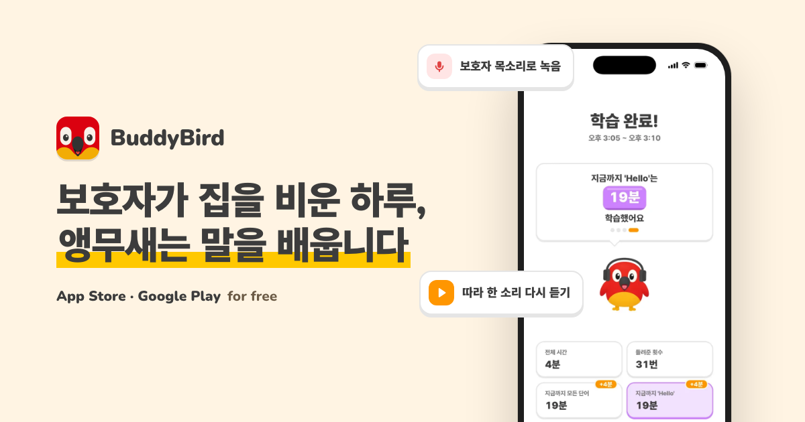

Project portfolio · 2026
보호자가 집을 비운 하루,
앵무새는 말을 배웁니다
보호자 목소리로 단어를 반복 재생하고, 앵무새 발화를 기록하는 모바일 앱. Google Play와 App Store에 출시해 운영하고 있습니다.
2026.04–현재 · 2026년 10월 기준 누적 다운로드 약 1,300건 / DAU 30–40명

01 · Problem & launch
보호자가 부재중일 때 앵무새와의 상호작용이 줄어듭니다. 유튜브·TV 반복 재생은 보호자의 목소리나 원하는 단어를 맞춤 제공하기 어렵고, 범용 홈캠에는 앵무새 학습 기능이 없습니다.
보호자가 녹음한 단어를 학습·무음·자연음 구간에 맞춰 재생하고, 앵무새가 낸 소리를 기록하는 기능부터 만들었습니다. 2026년 6월 10일 앱을 출시했습니다.
출시 초기 검증 · 2026.08 발표 기준
02 · Product & my work
단어 반복 재생, 보호자 목소리 녹음, 백그라운드 재생과 잠금 화면 제어를 구현했습니다.
발화 구간을 탐지하고 사람 음성·잡음과 앵무새 소리를 구분해 학습 결과에 연결했습니다.
WebRTC Viewer와 Cloudflare Realtime STUN/TURN으로 서로 다른 네트워크의 기기를 연결했습니다.
React Native (Expo) 학습 세션과 오디오 경로, WebRTC Viewer, FastAPI 판정 서버 통합, Docker·ECS에서 SQS·Lambda로의 처리 구조 전환, EAS·GitHub Actions·Maestro 배포·테스트 자동화
03 · Audio data & PoC
사용자가 동의한 학습 녹음을 익명으로 수집
VAD로 소리 구간을 분리해 클립 생성
오디오는 S3, 길이·포맷 등 메타데이터는 RDS
Perch 2.0 특징과 로지스틱 회귀로 앵무새 소리 구분
코뉴어와 퀘이커를 교차해 학습·평가하는 Leave-One-Bird-Out 검증 후 Perch 2.0을 선택했습니다.
이 페이지의 수집·모델 수치는 2026년 8월 중간심의 당시 검증 결과입니다.
04 · Technical decisions
앱이 재생한 단어가 마이크로 다시 들어오면 앵무새의 발화로 잘못 기록될 수 있습니다. Silero VAD로 발화 구간을 나누고 iOS·Android의 하드웨어 AEC와 WebRTC AEC3를 오디오 경로에 통합했습니다.
앵무새와 사람이 같은 단어를 말해도 길이가 다르므로 DTW로 시계열 유사도를 비교했습니다. 당시 부분 시퀀스 방식은 AUC 0.83, 균형 정확도 0.77을 기록했습니다.
중간심의에서 제시한 응급 상황 감지와 생활 리포트는 당시 향후 과제였습니다. 이 자료는 출시된 학습·원격 확인 기능과 연구 단계의 판정 결과를 구분해 설명합니다.
PoC 지표는 2026년 8월 발표 당시 데이터의 평가 결과이며 현재 제품의 운영 성능을 뜻하지 않습니다.